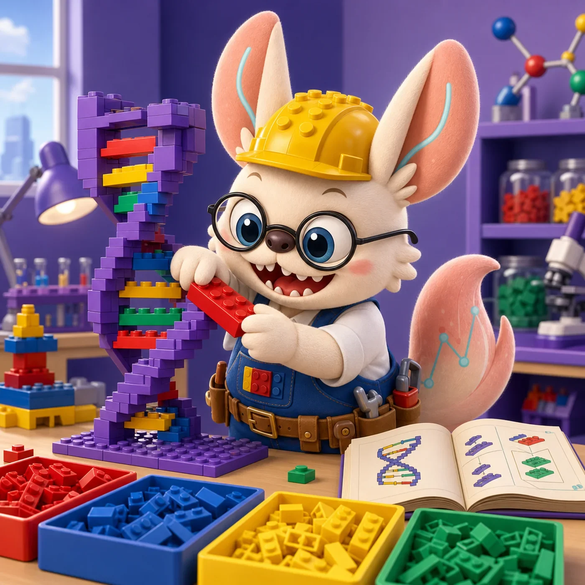
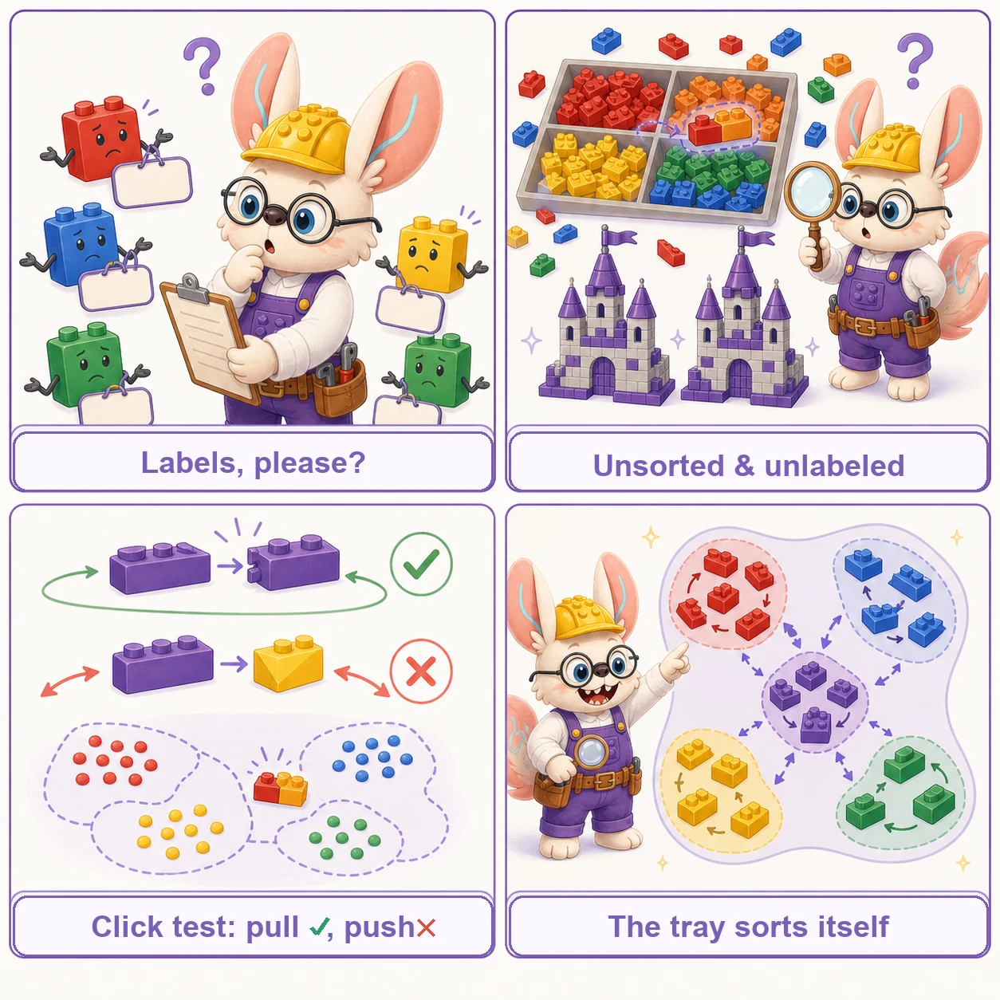
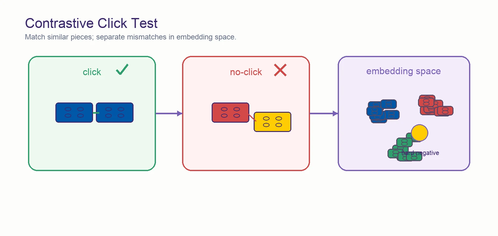
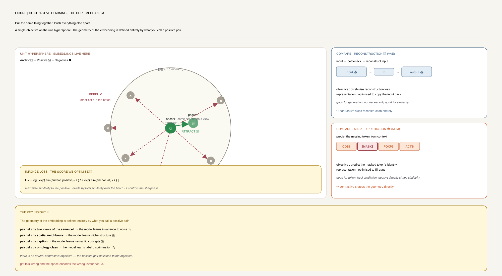
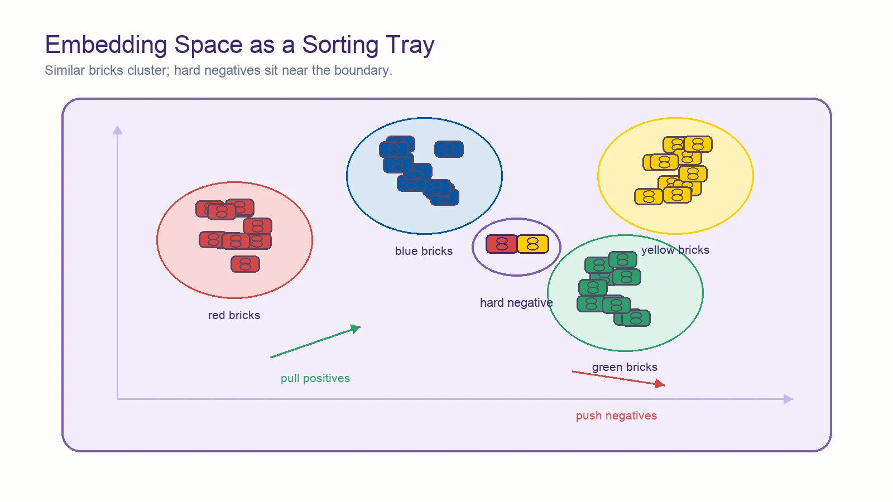

Contrastive Learning in Biomedical AI
Pull what belongs together, push what doesn't — a guide to contrastive objectives for single-cell, spatial, and multimodal biology, 2022–2025.
From NT-Xent on single cells (Concerto, 2022) to CLIP-style alignment of histology with transcriptomics (OmiCLIP, 2025) and chat-based exploration of cell atlases (CellWhisperer, 2025) — how contrastive objectives became a dominant paradigm for scalable representation learning across modalities.

Sort by Resemblance.
「能拼上的归一类，拼不上的分开。」
Contrastive learning is the tray-sorting game: hold two pieces side by side and ask whether they belong together. Do it a million times and the tray sorts itself — six scenes from the sorting bench, re-read as contrastive learning.
The click test
Hold two bricks and try to snap them. If they click, they belong to the same pile; if not, they don't. No labels needed — just the test.
Positive vs negative pairs. Every contrastive example is a click test: same-sample positives, different-sample negatives. See the basics ↓
The tray sorts itself
After enough click tests, the tray organizes: red bricks drift to red, long to long, studded to studded — without anyone naming the categories.
The embedding space. Contrastive objectives pull similar samples together and push dissimilar ones apart — unsupervised structure emerges. See the families ↓
Spot the difference
Two builds look identical at a glance. The game is finding the one brick that differs — and learning that everything else is "the same".
Augmentations & invariances. Two views of the same sample must land in the same spot: crops, noise, and modality shifts should not change identity. See the glossary ↓
The almost-right brick
A marbled brick sits between red and orange — the hardest call in the tray. Getting that one right teaches more than a hundred easy sorts.
Hard negatives. The most informative contrasts come from near-misses: samples that look alike but are genuinely different. See sampling ↓
Same mold, different color
A 2×4 brick is a 2×4 brick whether it is red, blue, or glow-in-the-dark. The color changes nothing about what it connects to.
Invariance to nuisance variation. Batch effects, sequencing depth, and imaging channels are color, not shape — good contrastive models ignore them. See the papers ↓
Check the half-build against the plan
Hold the half-finished castle next to the booklet: which parts already match, which are still loose ends?
Cross-modal pairing (CLIP-style). Match one modality against another — RNA against ATAC, image against text — the same way you check build against plan. See cross-modal models ↓

对比一万次之后，分选盘自己会分类 —— contrast enough, and the representation sorts itself.
📖 What is Contrastive Learning?
Contrastive learning trains representations by pulling semantically related views together in an embedding space while pushing unrelated views apart. Unlike reconstruction objectives (VAEs, autoencoders) or token prediction (masked language modeling), contrastive losses operate directly on geometry of the embedding — defining what is similar by what the practitioner pairs together.


Why It Matters for Biology
- Scalability without labels: Single-cell atlases routinely exceed 10M cells, but most lack consistent annotations. Contrastive objectives turn the dataset itself into supervision — each cell becomes its own anchor.
- Cross-modal alignment: CLIP-style objectives align modalities that share no feature space (H&E images ↔ transcriptomes, CT scans ↔ radiology reports, cells ↔ text) into a single embedding where retrieval, zero-shot classification, and chat-based query become possible.
- Spatial neighborhood structure: Graph-contrastive variants (DGI, GCL) exploit spatial adjacency as a natural notion of positive pair, encoding tissue architecture into cell embeddings.
- Discriminating near-identical inputs: Cancer-vs-wild-type peptides differ by one amino acid; supervised contrastive losses can force those embeddings apart where cross-entropy struggles.
- Atlas-scale reference mapping: Once a contrastive embedding is trained, new query cells project into it in seconds — Concerto maps 10K query cells onto a 10M cell reference in 8s.
The Four Contrastive Families You'll See
🔵 Instance Discrimination (SimCLR / NT-Xent)
Two augmented views of the same cell are pulled together; all other cells in the batch are negatives. Concerto, scCello.
🟢 Cross-Modal (CLIP / InfoNCE)
Dual encoders project paired modalities into a shared space using InfoNCE. OmiCLIP, CellWhisperer, MedMPT, scCLIP.
🟡 Graph Contrastive (DGI / GCL)
Maximize mutual information between a node and its local/global summary; corrupt the graph for negatives. GraphST, CellNEST, SpatialEx.
🟠 Supervised & Triplet Contrastive
Labels (cell ontology, cancer/WT, ligand class) define positives. Useful when class structure exists. ImmunoStruct (cancer–WT), supervised variants in foundation models.
The same paper often combines multiple families — e.g., MedMPT uses both intra-modal (CT slice ↔ CT slice) and inter-modal (CT ↔ report) contrastive losses alongside masked reconstruction.
![Four contrastive families compared side by side. (1) Instance Discrimination (SimCLR/NT-Xent): two augmented views of the same input are the positive pair; everything else in the batch is negative. (2) Cross-Modal (CLIP/InfoNCE): dual encoders project paired modalities (image ↔ text, H&E ↔ omics, CT ↔ report) into a shared space. (3) Graph Contrastive (DGI/GCL): maximise mutual information between a node and its neighborhood; corrupted-feature graphs supply negatives. (4) Supervised Contrastive: class labels define positives — same class together, different class apart. The four pair-definitions produce four different latent-space geometries from the same data.](figures/contrastive/contrastive_fig02_four_families.svg)
🔍 Visual Glossary: Hard Concepts at a Glance
A pictorial cheat sheet for the trickier ideas behind the methods below — InfoNCE geometry, EMA teacher–student, graph corruption, similarity matrices, the modality gap. Each diagram is the intuition, not the math.

InfoNCE / NT-Xent: softmax over similarities
The loss is just a categorical softmax: among the anchor's similarity scores to every candidate, the positive should win. Gradients drag its score up and everyone else's down. Temperature τ sharpens or softens the contest.
The unit hypersphere: only direction matters
All embeddings are L2-normalised onto a unit sphere. Similarity becomes a cosine — the angle between two vectors. Distance and magnitude are discarded; only direction in the latent space is meaningful.
Temperature τ: cold collapses, hot dissolves
τ controls how concentrated representations get on the sphere. Too low and they collapse onto a single point; too high and the contrastive signal washes out into uniformity. Concerto uses 0.1; MedMPT uses 0.07 — both warm.
Asymmetric EMA teacher–student
Two encoders. Only the student gets a gradient; the teacher's weights are a slow exponential moving average of the student's. Asymmetry prevents the trivial "predict yourself" collapse.
Deep Graph Infomax: real vs corrupted graph
Keep the graph topology, shuffle the node features. Train the GNN so a node's embedding is informative about the real summary but uninformative about the corrupted one — forcing it to encode the genuine feature–location coupling.
CLIP similarity matrix: diagonal positives
Image-and-text pairs form an N×N similarity matrix. The only N positives lie on the diagonal; every off-diagonal cell is a "wrong" pair. Symmetric InfoNCE makes every row and every column pick its diagonal entry.
The modality gap
Even after CLIP training, images and texts often live in two parallel sub-spaces. Same-modality retrieval still works, but cross-modal retrieval — the whole point — quietly fails. Audit by checking off-modal nearest neighbors.
Pairwise edges vs. hyperedges
A pairwise edge says "A relates to B". A hyperedge says "A, B, C, D all participate in the same group" — niches, tissue domains, ligand–receptor cliques — without decomposing into 6 separate pairwise edges.
Multi-hop cell–cell relay
Classical CCC methods only ask "does ligand on A bind receptor on B?". Multi-hop lets B then secrete a downstream ligand to C — a cascade. Graph attention surfaces it by treating the attention pattern itself as the signal.
Supervised contrastive on near-identical inputs
Cancer and wild-type peptides differ by one amino acid — their embeddings are almost on top of each other. Cross-entropy alone has to thread a hairline boundary. Supervised contrastive makes room first, then the classifier's job is easy.
HSIC: contrastive learning as dependence maximization
A kernel measure of statistical dependence between two variables: HSIC(X,Y) = 0 if and only if X and Y are independent (with a characteristic kernel). It is estimated as tr(K H L H)/(n−1)², where K and L are Gram (kernel) matrices over the two variables and H = I − (1/n)11ᵀ centers them. SSL-HSIC recasts contrastive learning as maximizing the dependence between a representation and its pair-identity, and shows InfoNCE is approximately a biased HSIC estimate — but the kernel supplies the spread, so it needs far fewer negatives.
HSIC = tr(K H L H) / (n−1)²📅 Evolution Timeline: From One-Modality Cells to Multimodal Foundation Models
Key Innovations:
- Concerto (2022): First major application of NT-Xent contrastive learning to single-cell biology; scales to 10M+ cell reference atlases with rapid query mapping in seconds.
Era characteristic: Single-modality (RNA/CITE-seq), instance discrimination with model-level augmentation, atlas-scale ambition.
Key Innovations:
- GraphST (2023): Deep Graph Infomax (DGI) variant for spatial transcriptomics — corrupts gene expression on a spatial graph to form negatives; unifies spatial clustering, multi-sample integration, and deconvolution.
Era characteristic: Spatial adjacency reframed as contrastive supervision; graph-level rather than instance-level objectives.
Key Innovations:
- Nicheformer (2025-01): Foundation model trained on 110M dissociated + spatial cells; pretrained with masked language modeling (the non-contrastive counterpoint shown here) so spatial context transfers to scRNA-seq.
- OmiCLIP (2025-05): CLIP-style dual encoder aligning H&E histology with transcriptomics over 2.2M paired image–text samples.
- CellNEST (2025-06): Graph attention + DGI to detect single-cell-resolution cell–cell communication and multi-hop relay networks.
- CellWhisperer (2025-11): InfoNCE on 1M transcriptomes paired with LLM-generated captions; enables chat-based exploration of single-cell data.
- MedMPT (2025-11): Vision–language transformer for chest CT + reports, combining intra-modal and inter-modal contrastive losses with masked reconstruction.
- ImmunoStruct (2025-12): Cancer–wild-type supervised contrastive loss separates immunogenic neoepitopes from near-identical wild-type peptides in latent space.
- SpatialEx (2025-12): Hypergraph encoder + corrupted-hypergraph contrastive loss enables diagonal integration of serial spatial-omics sections via H&E as universal anchor.
- Multimodal Foundation Transformers Perspective (2025-12): Proposes a unified "Super Transformer" framework where CLIP-style contrastive objectives bind heterogeneous biological modalities into one embedding space.
Era characteristic: Cross-modal contrastive alignment becomes the default mechanism for binding modalities (image–RNA, text–RNA, CT–report, structure–sequence) without a shared feature space.
🔬 Method Taxonomy: Four Contrastive Families
🧠 Instance Discrimination (SimCLR / NT-Xent / Self-Distillation)
Principle: Each cell is its own class. Generate two views (via dropout, gene masking, or asymmetric teacher–student passes) and pull them together while pushing all other cells in the batch apart on the unit hypersphere.
Advantages: No labels needed; scales to millions of cells; learns transcriptome-wide structure rather than HVG-only signal.
Watch out for: Performance is sensitive to batch size (more negatives → harder task → better embeddings); naïve gene-level augmentations can erase biology.
Representative work: Concerto (2022).
🔗 Cross-Modal Contrastive (CLIP / InfoNCE)
Principle: Two encoders project two different modalities into one shared space; paired samples are positives, all other pairs in the batch are negatives. Trained with symmetric InfoNCE.
Advantages: Enables zero-shot transfer, retrieval across modalities, and natural-language interfaces; doesn't require imputation between modalities.
Watch out for: Quality of paired data dominates everything; LLM-generated captions can leak label information; modality gap (representations cluster by modality rather than semantics) is a known failure mode.
Representative work: OmiCLIP (2025) · CellWhisperer (2025) · MedMPT (2025).
📊 Graph Contrastive (DGI / Deep Graph Infomax)
Principle: Build a graph from spatial/biological adjacency; corrupt it (e.g., shuffle node features) to create a negative graph; train a GNN to maximize mutual information between each node's representation and a real-graph summary while minimizing it against the corrupted summary.
Advantages: Encodes spatial neighborhood structure without requiring ground truth labels; well suited for ligand–receptor reasoning and multi-hop cell–cell communication.
Watch out for: Choice of graph (k-NN radius, hyperedge size) shapes results more than choice of loss; corruption strategy must not be trivially detectable.
Representative work: GraphST (2023) · CellNEST (2025) · SpatialEx (2025).
🎯 Supervised & Class-Conditional Contrastive
Principle: When labels exist (cell ontology, cancer vs. wild-type peptide, disease class), use them to define positive pairs across the dataset rather than just within-augmentation. Variants include SupCon and triplet/margin losses.
Advantages: Sharper decision boundaries than cross-entropy alone; particularly powerful for near-identical inputs that must be separated (1-aa peptide differences, fine-grained cell subtypes).
Watch out for: Label noise propagates aggressively into the geometry; requires careful sampling for class imbalance.
Representative work: ImmunoStruct (2025).
Choosing a Contrastive Recipe
Quick decision guide
- One modality, lots of unlabeled cells: Instance discrimination (NT-Xent / self-distillation) — Concerto-style.
- Two modalities, paired data: Symmetric InfoNCE with two encoders — OmiCLIP / CellWhisperer / MedMPT-style.
- Spatial data or any graph-structured input: Graph contrastive (DGI variant) — GraphST / CellNEST / SpatialEx-style.
- You have labels and near-identical inputs to separate: Supervised contrastive — ImmunoStruct-style.
- Foundation model pretraining: Combine masked reconstruction + contrastive — MedMPT-style.
⚖️ Side-by-Side: Self-Augmentation vs. Cross-Modal Pairing
Concerto (2022) and OmiCLIP (2025) both minimise InfoNCE on the unit hypersphere, but they form positives — and avoid collapse — in completely opposite ways: one cell viewed twice through dropout vs. a matched H&E tile and transcriptome profile.
The same raw input — a single cell's gene-expression vector — becomes very different training signals depending on whether you augment within one modality or pair across two:
The split traces back to one root decision — where does the positive pair come from? Concerto generates its own supervision through stochastic dropout on a single modality, so no paired data is ever needed, and collapse is prevented by the architectural asymmetry together with NT-Xent's in-batch negatives. OmiCLIP anchors supervision in biology: two genuinely different physical measurements of the same tissue spot define the positive, and the dual-encoder architecture provides the structural barrier against trivial collapse — but collecting 2.2M matched pairs is the prerequisite the whole approach rests on.
📄 Landmark Papers (2022–2025)
🔵 Instance Discrimination on Single Cells
Concerto: Contrastive learning enables rapid mapping to multimodal single-cell atlas of multimillion scale
- First major contrastive recipe for single-cell biology
- 10M cell reference trained in 1.5h on 8 GPUs; 10K query cells mapped in 8s
- F1 = 0.926 on PBMC45k, beating SciBet, SingleR, Cell BLAST
![Concerto asymmetric teacher–student architecture. The same cell is augmented two different ways (dropout-based, no biological augmentation): one view goes through the trainable Student encoder, the other through the Teacher encoder which receives no gradient. The Student's output is pulled toward the Teacher's via NT-Xent contrastive loss; the Teacher's weights are updated by exponential moving average of the Student's. Modalities (RNA + protein) are combined by element-wise summation before the loss. The asymmetry prevents collapse — both encoders sharing weights would degenerate.](figures/contrastive/contrastive_fig03_concerto.svg)
📊 Graph Contrastive Learning
GraphST: Spatially informed clustering, integration, and deconvolution of spatial transcriptomics
- ~10% higher clustering ARI than competing methods on DLPFC
- Only method to recover Layer 6 / WM boundary in human cortex
- Implicit batch correction (iLISI 1.85 vs 1.57 Harmony)
![GraphST graph contrastive workflow. Step 1: build a k-nearest-neighbor spatial graph over spots, with each node carrying the spot's gene-expression vector. Step 2: generate a corrupted graph by shuffling node features across spots (preserves graph structure, destroys the feature–location coupling). Step 3: a GNN encoder processes both graphs. Step 4: DGI objective pulls each spot's embedding toward the real-graph local summary and pushes it away from the corrupted-graph summary. The result: tissue architecture (cortical layers, tumor boundaries) emerges in the embedding for free.](figures/contrastive/contrastive_fig04_graphst.svg)
CellNEST: Cell–cell relay networks via attention on spatial transcriptomics
- First method to detect multi-hop CCC relay networks at spot resolution
- Unsupervised — no ground-truth CCC labels needed
- Works across Visium, Visium HD, MERFISH, 2D and 3D data
![CellNEST multi-hop cell–cell communication relay detection. Spatial transcriptomics is cast as a multi-edge graph: cells are nodes; different edge types correspond to different ligand–receptor pairs within distance. A graph attention network with DGI contrastive loss is trained on real-vs-corrupted graphs. The learned attention weights reveal multi-hop signaling cascades: Cell A → ligand1 → Cell B → ligand2 → Cell C, where Cell B is the relay. Unsupervised — no ground-truth communication labels needed. Works at single-cell resolution on Visium, Visium HD, MERFISH, both 2D and 3D.](figures/contrastive/contrastive_fig07_cellnest_relay.svg)
SpatialEx: High-parameter spatial multi-omics through histology-anchored integration
- Hypergraph instead of pairwise edges captures group-level interactions
- Scales to >1M cells with non-overlapping serial sections
- Technology-agnostic — both spot and single-cell resolution
![SpatialEx hypergraph contrastive integration. Three serial tissue sections — each measured with a different modality (transcriptomics, proteomics, metabolomics) — share H&E histology imaging as their common substrate. SpatialEx builds a hypergraph where hyperedges connect groups of cells via histology features, then trains a hypergraph encoder with contrastive loss between real and shuffled hypergraphs. The result: a single embedding space integrates all three modalities without paired co-profiling — H&E is the Rosetta Stone every section already has.](figures/contrastive/contrastive_fig08_spatialex.svg)
🔗 Cross-Modal CLIP-Style Models
OmiCLIP: A visual–omics foundation model bridging histopathology and spatial transcriptomics
- Largest paired histology–transcriptomics corpus to date (2.2M pairs)
- Single embedding space unlocks five distinct downstream tasks
- Bypasses PASTE/GPSA/CAST on tissue alignment benchmarks
![OmiCLIP dual-encoder + Loki platform architecture. Left: ViT image encoder processes H&E patches; right: transcriptome-as-text encoder processes top-50-expressed-gene sentences per spot. Both project into a shared 768-d embedding space via symmetric InfoNCE on 2.2M paired samples (113 Visium studies, 32 organs). The resulting joint embedding powers five downstream Loki modules: Align (tissue-section registration), Annotate (cell type), Decompose (deconvolution), Retrieve (image↔omics search), PredEx (gene-expression prediction from H&E alone).](figures/contrastive/contrastive_fig05_omiclip_loki.svg)
CellWhisperer: Chat-based exploration of single-cell data via multimodal learning
- First chat interface for single-cell data — no coding required
- Zero-shot cell type annotation across diverse tissues
- Integrated with CELLxGENE Explorer for visual + conversational workflow
![CellWhisperer three-stage pipeline. Stage 1 (Pairing): 1M+ GEO/CELLxGENE transcriptome profiles are paired with Mixtral-generated natural-language captions describing cell type, tissue, condition. Stage 2 (Contrastive Alignment): frozen Geneformer encodes the transcriptome; BioBERT encodes the caption; an InfoNCE loss aligns them in a shared 2,048-d space. Stage 3 (Chat Interface): a fine-tuned Mistral-7B reasons over the resulting embedding for zero-shot cell type queries, natural-language atlas exploration, and free-form Q&A about single cells. The atlas becomes conversational without any coding.](figures/contrastive/contrastive_fig06_cellwhisperer.svg)
MedMPT: A vision–language pretrained transformer for clinical respiratory disease
- Demonstrates intra + inter-modal contrastive stacking on clinical CT
- 31.75% reduction in radiologist reporting time in human–AI study
- Covers diagnosis, report generation, and prescription recommendation
Multimodal foundation transformer models for multiscale genomics
- Frames CLIP-style contrastive as the lingua franca of multimodal genomics
- Practical code-based primers using public datasets
- Roadmap rather than method — useful for orienting newcomers
🎯 Foundation Models: Contrastive vs. Masked-LM Pretraining
Nicheformer: A foundation model for single-cell and spatial omics
- First foundation model jointly trained on dissociated + spatial data
- 110M cells across 5 spatial technologies + dissociated protocols
- Demonstrates necessity of multimodal training for spatial tasks
ImmunoStruct: Multimodal deep learning for immunogenicity prediction
- 26,049-sample multi-allelic structural dataset (27 most common HLAs)
- Demonstrates value of supervised contrastive for near-identical inputs
- E(n)-equivariant GNN layers handle 3D coordinates correctly
![Why supervised contrastive beats cross-entropy alone for near-identical inputs. Two peptides differ by a single amino acid: a cancer mutant (immunogenic) and its wild-type counterpart (non-immunogenic). Left panel: cross-entropy loss alone — the model is asked to find a thin hyperplane between near-identical input embeddings; the decision boundary is fragile, easily flipped by noise. Right panel: supervised contrastive loss adds an explicit force pushing the cancer-vs-WT pair apart in latent space first; cross-entropy then operates on a much more separated geometry. Contrastive loss makes the room first; the classifier can then easily find the boundary.](figures/contrastive/contrastive_fig09_immunostruct.svg)
🧭 Putting Contrastive Learning into Practice
Designing Positive & Negative Pairs
The most important decision is what you call a positive pair — it defines the geometry of the resulting space. Get this wrong and the embedding will collapse onto the wrong invariance.
| Pair definition | What the embedding learns | Typical use |
|---|---|---|
| Two views of same cell (dropout / masking) | Invariance to noise & technical perturbation | Reference mapping, batch correction (Concerto) |
| Cell + spatial neighborhood | Tissue architecture, local context | Spatial clustering, niche identification (GraphST, SpatialEx) |
| Cell + caption / image + transcriptome | Cross-modal semantics, zero-shot transfer | Retrieval, chat interfaces (OmiCLIP, CellWhisperer) |
| Same ontology class (supervised) | Class-aware geometry, fine-grained discrimination | Cell type annotation, immunogenicity (ImmunoStruct) |
| Graph vs corrupted graph (DGI) | Mutual information with local/global summary | Spatial / interaction graphs (CellNEST) |
![Five panels showing the same dataset embedded under five different positive-pair definitions. Panel 1 (augmentation pairs): embedding encodes robustness to noise — same-cell views cluster, no semantic structure. Panel 2 (spatial-neighbor pairs): embedding encodes tissue architecture — niches and cortical layers separate. Panel 3 (cross-modal pairs): embedding encodes shared semantics across image/text/omics — modalities mix, semantics dominate. Panel 4 (class-label pairs): embedding encodes ontology structure — cell types separate cleanly with no within-class structure. Panel 5 (graph DGI pairs): embedding encodes mutual information with neighborhood — local context determines geometry. Same data, five very different latent spaces.](figures/contrastive/contrastive_fig10_positive_pair_choice.svg)
Common Pitfalls
- Batch shortcut: If samples within a batch share technical artifacts, the model learns to discriminate batches rather than biology. Mitigate with source-aware batch norm or domain adaptation (Concerto's approach), or careful batch construction.
- Modality gap: CLIP-style models often produce embeddings that cluster by modality before clustering by semantics. Watch for this in retrieval failure modes — even when same-modality retrieval works, cross-modal retrieval may not.
- Caption leakage: When using LLM-generated captions for cell or image data, the captions can encode information (cell type names, disease labels) that the contrastive loss then trivially recovers. Audit captions before celebrating zero-shot performance.
- Augmentation that erases biology: Gene dropout / masking is a popular augmentation but can remove marker genes for rare cell types. Test that augmentations preserve the variability of interest.
- Temperature tuning: The InfoNCE temperature τ controls how concentrated representations become on the hypersphere. Too low → collapse; too high → uniform. Concerto uses τ=0.1; MedMPT uses τ=0.07. Tune on a validation downstream task.
- Evaluating on the training distribution: Contrastive models often look great on in-distribution retrieval but degrade on truly novel cell types or tissues. Always hold out a tissue / disease / technology, not just cells.
![The InfoNCE temperature parameter τ across three regimes on the unit hypersphere. Cold (τ small, e.g. 0.01): representations concentrate to a few sharp clusters, indistinguishable representations collapse onto each other, useful structure is lost. Warm (τ moderate, e.g. 0.07–0.1): healthy spread on the hypersphere, semantically related points cluster while preserving fine-grained distinctions — this is what Concerto (τ=0.1) and MedMPT (τ=0.07) use. Hot (τ large, e.g. 0.5+): representations dissolve toward uniform on the sphere, contrastive signal washes out, the model can't discriminate. The regime is task-dependent — tune τ on a held-out downstream task.](figures/contrastive/contrastive_fig12_temperature.svg)
When NOT to use contrastive learning
Contrastive learning isn't always the right tool
Skip it when:
- You need calibrated probabilities or generative samples: VAEs and diffusion models give you these; contrastive embeddings don't.
- Your dataset is small (<10k samples): Contrastive losses need large batches of negatives to work well; small datasets often do better with supervised cross-entropy or matrix factorization (MOFA+, scVI).
- You want explicit, interpretable latent factors: NMF, MOFA+, and ICA give factor loadings; contrastive embeddings give a metric space with no axis interpretation.
- Pair definition is ambiguous: If you can't clearly say what two samples being "similar" means in your problem, a contrastive objective will encode the wrong invariance.
![Top-down decision tree for picking contrastive learning vs alternatives. Root: what do you need? Branch A (calibrated probabilities or generative samples): use VAE or diffusion model — not contrastive. Branch B (small dataset, less than 10k samples): use supervised cross-entropy or scVI/MOFA+. Branch C (interpretable factors): use NMF, MOFA+, or ICA. Branch D (clear positive pair available + metric space output desired): use contrastive — and within contrastive, choose by what defines a positive: augmentations (Concerto), spatial neighbors (GraphST), paired modalities (OmiCLIP), class labels (ImmunoStruct), graph corruption (CellNEST). Don't reach for contrastive when something else fits better.](figures/contrastive/contrastive_fig11_decision_tree.svg)
Software & Reproducibility
- Concerto: TensorFlow reference; sparse index-value gene encoding; multi-GPU distributed training.
- GraphST: PyTorch + PyG; clean baseline for graph-contrastive on spatial data.
- Nicheformer: Pretrained weights and 110M-cell corpus on Hugging Face; HF Datasets integration.
- Loki / OmiCLIP: End-to-end platform for histology ↔ spatial-transcriptomics alignment, retrieval, and prediction.
- CellWhisperer: Geneformer + BioBERT encoders, Mistral-7B chat layer, hosted demo at cellwhisperer.bocklab.org.
- SpatialEx: Hypergraph + UNI pathology foundation model; tutorials at spatialex-tutorials.readthedocs.io.
🛠️ Hands-On Practice
The sections below give you a concrete path from a blank environment to a working contrastive training loop for single-cell data — with the packages, data structures, a runnable snippet, and the pitfalls you'll actually hit.
Environment & packages
Install into a fresh conda or venv environment. lightly wraps common SSL objectives (NT-Xent, MoCo, BYOL) and works with any PyTorch encoder. info-nce-pytorch is a minimal InfoNCE reference implementation. pytorch-lightning handles the training loop boilerplate.
# Python 3.10+
pip install torch torchvision --index-url https://download.pytorch.org/whl/cu118
pip install pytorch-lightning lightly info-nce-pytorch
pip install scikit-learn anndata scanpy
# optional: sentence-transformers for text-side of CLIP-style objectives
pip install sentence-transformersHardware. NT-Xent/InfoNCE requires large effective batch sizes (256–2048) to supply enough in-batch negatives; a single A100 (80 GB) handles batch 512 with a 128-D encoder. For CPU-only prototyping, reduce batch to 64 and use a small synthetic dataset — expect slow convergence but correct gradients.
Data structures & formats
- Positive/negative pairs: for single-cell, a "view" is a stochastic augmentation of a count vector — typically random gene masking (set 10–30% of gene counts to 0) or Gaussian noise on log-normalised expression. Two augmented views of the same cell form the positive pair; all other cells in the batch are negatives.
- Batched tensors: the encoder receives a
(N, G)float32 tensor (N = batch size, G = number of genes) and produces(N, D)L2-normalised embeddings. The loss operates on the(N, D)pair(z1, z2). - AnnData /
.h5ad: the standard container for single-cell data. After QC and log-normalisation, store the expression matrix inadata.Xand load rows as training samples via a PyTorchDataset. - Augmentation pipeline: unlike images, single-cell augmentations should be biologically plausible — random dropout of genes (simulates technical dropout), small Gaussian noise, or subsetting to a random gene panel. Avoid augmentations that erase marker genes for rare populations.
- Memory bank (optional): for small batches, a FIFO queue of past embeddings (MoCo-style) extends the effective negative set without increasing batch size.
Minimal code walkthrough
Define an MLP encoder, build two augmented views of each cell in a batch, compute NT-Xent loss via info_nce, and run one gradient step — a self-contained 25-line training loop.
import torch
import torch.nn as nn
import torch.nn.functional as F
from info_nce import InfoNCE
# --- Encoder: gene counts (G,) -> unit-sphere embedding (D,) ---
class CellEncoder(nn.Module):
def __init__(self, n_genes: int = 2000, d_emb: int = 128):
super().__init__()
self.net = nn.Sequential(
nn.Linear(n_genes, 512), nn.BatchNorm1d(512), nn.ReLU(),
nn.Linear(512, 256), nn.BatchNorm1d(256), nn.ReLU(),
nn.Linear(256, d_emb),
)
def forward(self, x):
return F.normalize(self.net(x), dim=-1) # L2-normalise onto unit sphere
# --- Augmentation: random gene dropout (simulates technical dropout) ---
def augment(x: torch.Tensor, drop_prob: float = 0.2) -> torch.Tensor:
mask = torch.bernoulli(torch.full_like(x, 1.0 - drop_prob))
return x * mask
# --- Training step ---
encoder = CellEncoder(n_genes=2000, d_emb=128)
loss_fn = InfoNCE(temperature=0.1, reduction="mean", negative_mode="unpaired")
optimizer = torch.optim.Adam(encoder.parameters(), lr=1e-3)
# x: (N, G) float32 log-normalised expression for one batch
x = torch.randn(256, 2000).clamp(min=0) # synthetic placeholder
view1 = augment(x)
view2 = augment(x)
z1 = encoder(view1) # (N, D)
z2 = encoder(view2) # (N, D)
loss = loss_fn(z1, z2) # NT-Xent: pull (z1_i, z2_i) together, push apart from all j != i
optimizer.zero_grad()
loss.backward()
optimizer.step()
print(f"InfoNCE loss: {loss.item():.4f}") # ~log(N) at init, decreases as pairs alignCommon pitfalls & tips
- Large batch / sufficient negatives is non-negotiable. With N=32, the loss has only 31 negatives per anchor — insufficient signal and the model learns trivially. Use N≥256, or add a MoCo-style memory bank for GPU-constrained settings.
- Augmentation design is domain-specific — cells ≠ images. Random horizontal flip or colour jitter corrupts gene identity. Use biologically motivated perturbations: gene dropout, Gaussian noise on log-counts, or random subsampling to lower sequencing depth.
- Temperature τ needs tuning. Start at 0.1 (Concerto) or 0.07 (MedMPT). Too small → representations collapse to a single point; too large → uniform distribution, no contrastive signal. Tune by tracking linear-probe accuracy on a held-out cell-type annotation task.
- Representation collapse. If training loss drops to near-zero in the first epoch, check that BatchNorm is active (it provides implicit negative correlation) and that the two views are truly different augmentations. Asymmetric architectures (teacher–student, as in Concerto) are more collapse-resistant.
- Evaluate embeddings, not just loss. InfoNCE loss correlates poorly with downstream utility. After each epoch, run a k-NN (k=15) or linear probe on a labelled subset: classify cell types and track accuracy. UMAP visualisation can reveal whether batch effects dominate the geometry before you waste GPU time.
- Augmentations must not erase marker genes. Test augmentations by checking that rare cell-type markers (e.g.
FOXP3for Tregs) survive dropout at the chosen rate. If a marker gene appears in <5% of cells it may be reliably masked out, destroying the signal for that population.